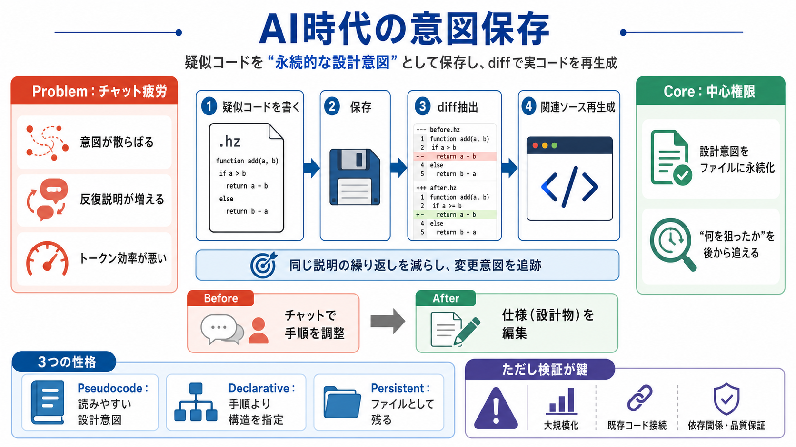

Coding With LLMs in 2026: The Model Matters More Than the Prompts | Bored Hacking
Last year, I wrote about using LLMs + agentic workflows to write most of my code. While the core principles hold, the nu…

Last year, I wrote about using LLMs + agentic workflows to write most of my code. While the core principles hold, the nu…
This content is written by a commercial general-purpose language model (LLM) along with the Futurum Intelligence Platfor…
The dire consequences of skipping human oversight have been documented. One developer who leaned heavily on AI generatio…
Cost:Amazon Q Developer can be more expensive than alternatives like GitHub Copilot, which may be a consideration for sm…
An AI coding agent in 2026 is a software system that plans, writes, edits, and executes code with minimal human input, u…